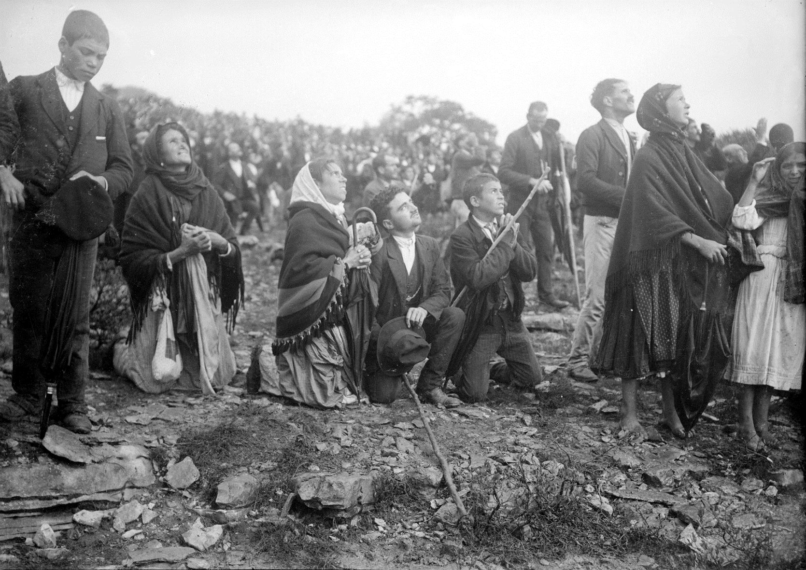

Fatima

Il 12 e il 13 di ogni mese la Madonna indossa questa corona
Il Messaggio di Riconciliazione di Fatima
"Se potessi gettare in ogni cuore il fuoco che brucia nel mio petto e mi fa amare tanto i Cuori di Gesù e Maria!" (Santa Giacinta Marto)
"Voglio consolare il Salvatore e poi convertire i peccatori, affinché non Lo offendano più!" (San Francesco Marto)
Sacrificatevi per i peccatori e dite spesso a Gesù, specialmente quando fate un sacrificio:
O mio Gesù, è per amore di Te, per la conversione dei peccatori, per il Santo Padre e in riparazione dei peccati contro il Cuore Immacolato di Maria.
(Maria a Fatima il 13 luglio 1917)
Memorie di Suor Lucia dall'originale portoghese

Riconciliatevi con Dio (2 Cor 5,20)
Quando Dio, spinto dal Suo amore misericordioso, invia Maria con un messaggio ai figli della terra, dietro ciò sta quel desiderio di Dio che vuole che tutti siano salvati. (1 Tim 2,4)
Maria viene per così dire come Madre del Buon Pastore, per ricordare alle pecore di Suo Figlio le verità salvifiche del Vangelo.
Chi di voi, avendo cento pecore e perdendone una, non lascia le novantanove nel deserto e va in cerca di quella perduta finché non la trovi? E quando l'ha trovata, se la carica sulle spalle con gioia …
Vi dico: Così vi sarà gioia in cielo per un peccatore che si converte. (Lc 15,4)
"La luce che fluisce attorno alla sua nobile figura in tutti i luoghi delle apparizioni è un fronte d'attacco contro le tenebre in cui il mondo peccatore minaccia di sprofondare. […] Ella chiede, implora e piange. Piange nella Rue du Bac a Parigi il 18 luglio 1830. Piange a La Salette nel 1846, e Léon Bloy scrive delle sue lacrime che furono il sospiro più straziante mai udito nel mondo dal Consummatum est – È compiuto sulla Croce. Piange il 21 febbraio 1858 a Lourdes, e chi non sarebbe commosso quando ode l'innocente bambina Bernardetta dire che piange perché la Signora piange. Queste lacrime sono certamente segni di dolore celeste per l'ostinazione dei peccatori. Ma sono anche l'ultimo tentativo che solo un cuore di madre può concepire e intraprendere per commuovere i suoi figli alle lacrime di compassione e di conversione." [A. J. Fuhs – Fatima e la Pace, p. 46.]
E a Fatima, un piccolo luogo in Portogallo del tutto sconosciuto fino al 13 maggio 1917, Maria continua la sua gigantesca opera di salvezza. Chiede urgentemente ai suoi figli terreni di riconciliarsi con Dio e "di non offenderLo più." La seconda cosa che chiede tanto ai suoi figli è l'aiuto nella sua grande opera di salvezza attraverso la preghiera e il sacrificio: "Pregate, pregate molto e portate sacrifici per i peccatori." E si affretta con le preghiere di riparazione e i sacrifici delle sue pecore verso il suo divino Figlio e implora misericordia e pazienza.
Nel libro "Suor Lucia parla di Fatima – Memorie di Suor Lucia I" sono descritte, oltre alle apparizioni dell'Angelo e della Madre di Dio, anche le vite dei tre pastorelli, che adempirono le richieste della Madonna in modo esemplare. La loro instancabile preghiera e sacrificio per la salvezza delle anime conferisce al messaggio di Fatima un'attrattiva molto speciale. Il 13 maggio 2000 Francesco e Giacinta Marto furono beatificati da Papa Giovanni Paolo II. E il 13 maggio 2017 furono canonizzati da Papa Francesco.
Dio ha scelto queste pure anime di bambini per condurre le Sue pecore al pascolo lussureggiante e alla sorgente zampillante del Vangelo. Così i piccoli pastori sotto la guida della Madonna divennero pastori di anime secondo il Cuore di Gesù. Risplendono davanti a tutti i fedeli, soprattutto ai bambini, sul cammino della santità. Sono messaggeri di pace, quella pace ineffabile di cui l'umanità ha tanto sete. La buona novella di Betlemme risuona a Fatima:
Non abbiate paura; io sono l'Angelo della Pace!
Tra i Papi recenti, che furono tutti grandi devoti di Fatima, spicca in modo speciale San Papa Giovanni Paolo II. L'attentato alla sua vita il 13 maggio 1981 lo rese ancora più vigile al messaggio di Fatima. Ancora e ancora il Papa sottolineò che la Madre di Dio gli salvò la vita e diresse il proiettile contro di lui in modo tale che sopravvisse all'attentato. Perciò donò il proiettile che trafisse il suo corpo alla Madonna di Fatima. Il 13 maggio 1982 pregò a Fatima:
O Cuore Immacolato! Aiutaci a superare il pericolo del male… Possa l'infinita potenza della redenzione mostrarsi ancora una volta nella storia del mondo: la potenza dell'amore misericordioso! Possa fermare il male e trasformare le coscienze! Nel Tuo Cuore Immacolato possa la luce della speranza essere rivelata a tutti!
Una volta vennero due sacerdoti a interrogaci. Raccomandarono che pregassimo per il Santo Padre. Giacinta chiese chi fosse il Santo Padre, e i sacerdoti ci spiegarono chi è e quanto ha bisogno delle nostre preghiere. Giacinta nutrì un tale grande amore per il Santo Padre che aggiunse sempre "e per il Santo Padre" quando offriva a Gesù i suoi sacrifici. Alla fine del Rosario pregava sempre tre Ave Maria per il Santo Padre. [1 E I. 11]
Io sono il Buon Pastore! (Gv 10,14)
Giacinta amava anche prendere gli agnellini bianchi, abbracciarli e baciarlos, e portarli a casa tra le braccia la sera affinché non si stanchessero. Un giorno si pose in mezzo al gregge sulla strada di casa.
– Giacinta – chiesi, perché vai lì in mezzo alle pecore?
– Per fare come il nostro Salvatore, che su un santino che mi hanno dato sta pure così in mezzo a tante pecore e ne tiene una tra le braccia. [1 E I. 6]
Un Angelo e tre pastorelli
La prima apparizione 1916
Stavamo giocando da un po' quando improvvisamente, sebbene fosse altrimenti una giornata calma, un forte vento scosse gli alberi. Guardammo in alto e vedemmo […] un giovane di 14-15 anni, più bianco della neve. […], era di grande bellezza. Quando si fermò davanti a noi, disse:
– Non abbiate paura! Io sono l'Angelo della Pace! Pregate con me! Inginocchiato per terra piegò la fronte a terra e ci fece ripetere queste parole tre volte:
– Mio Dio, credo in Te, Ti adoro, spero in Te, Ti amo. Chiedo perdono per coloro che non credono, non adorano, non sperano e non amano Te.
Poi disse, alzandosi:
– Così pregherete. I Cuori di Gesù e Maria attendono le vostre suppliche ferventi.
Le sue parole si impressero così profondamente nella nostra memoria che non le dimenticammo mai più. Da allora passammo molto tempo a ripeterle così profondamente inchinati, finché talvolta cadevamo per la stanchezza. [2 E II. 2]
La seconda apparizione 1916
Molto tempo dopo giocammo in un giorno d'estate […] a un pozzo. […] Improvvisamente vedemmo davanti a noi la stessa figura, l'Angelo, mi sembrò. Disse:
– Cosa state facendo? Pregate, pregate molto! I Cuori di Gesù e Maria hanno piani di misericordia con voi. Offrite all'Altissimo preghiere e sacrifici incessanti.
– Come offriremo i sacrifici? – chiesi.
– Fate di tutto ciò che potete un'offerta, per fare riparazione dei peccati con cui Egli è offeso e per implorare la conversione dei peccatori. […] Soprattutto accettate la sofferenza e sopportate con sottomissione ciò che il Signore vi invierà. [2 E II. 2]
Queste parole dell'Angelo si impressero nelle nostre menti come una luce che ci fece riconoscere chi è Dio, quanto ci ama e vuole essere amato in cambio. Riconoscemmo il valore del sacrificio e quanto Gli è gradito; e come Egli converte i peccatori per mezzo del sacrificio. Da quel momento cominciammo a offrire al Signore tutto ciò che ci affliggeva, tuttavia non cercammo altre mortificazioni o penitenze che ripetere per ore prostrati a terra la preghiera dell'Angelo. [4 E II. 1]
La terza apparizione 1916
Così passò un po' di tempo e eravamo per strada con i nostri greggi verso un appezzamento di terra dei miei genitori. […] Quando arrivammo lì, cominciammo in ginocchio, faccia a terra, a ripetere la preghiera dell'Angelo:
– Mio Dio, credo in Te …
Non so quante volte avevamo ripetuto questa preghiera quando vedemmo una luce sconosciuta brillare sopra di noi. Ci alzammo per vedere cosa accadeva e vedemmo l'Angelo. Nella mano sinistra teneva un calice; sopra galleggiava un'Ostia, da cui cadevano gocce di sangue nel calice. L'Angelo lasciò galleggiare il calice nell'aria, si inginocchiò accanto a noi e ci fece ripetere tre volte:
Santissima Trinità, Padre, Figlio e Spirito Santo, nel più profondo rispetto Ti adoro e Ti offro il prezioso Corpo, Sangue, Anima e Divinità di Gesù Cristo, presente in tutti i tabernacoli del mondo, in riparazione di tutte le bestemmie, sacrilegi e indifferenza con cui Egli stesso è offeso. Per i meriti infiniti del Suo Sacratissimo Cuore e del Cuore Immacolato di Maria, Ti chiedo la conversione dei poveri peccatori.
Poi si alzò, prese il calice e l'Ostia, mi diede la sacra Ostia e divise il Sangue nel calice tra Giacinta e Francesco, dicendo:
– Ricevete il Corpo e bevete il Sangue di Gesù Cristo, così terribilmente offeso da uomini ingrati. Fate riparazione per i loro peccati e consolate il vostro Dio! Si inginocchiò di nuovo per terra, ripeté con noi altre tre volte la stessa preghiera:
Santissima Trinità …
e scomparve. Restammo in questa posizione e continuammo a ripetere le stesse parole. [2 E II. 2]
Restiamo a lungo in ginocchio davanti al Signore presente nell'Eucaristia, facendo riparazione con la nostra fede e il nostro amore per la negligenza, la dimenticanza e persino le offese che il nostro Redentore deve sopportare in molte parti del mondo. (San Giovanni Paolo II, Mane nobiscum Domine, 18)
La Madonna viene
13 maggio 1917
Stavo giocando con Francesco e Giacinta sulla sommità del pendio della Cova da Iria. […] quando improvvisamente vedemmo qualcosa come un lampo. […]
Cominciammo a scendere il pendio e spingemmo le pecore verso la strada. Quando eravamo circa a metà del pendio, […] vedemmo sopra una quercia una Signora, vestita interamente di bianco, più brillante del sole. […] Sorpresi da questa apparizione restammo fermi. […] Poi la Madonna disse:
– Non abbiate paura! Non vi farò del male!
– Da dove venite? – le chiesi.
– Vengo dal cielo!
– E cosa volete da me?
– Sono venuta per chiedervi di venire qui per i prossimi sei mesi, il tredici alla stessa ora. Poi vi dirò chi sono e cosa voglio. […]
– Andrò anch'io in cielo?
– Sì, ci andrai!
– E Giacinta?
– Sì!
– E Francesco?
– Sì, ma deve pregare molti più Rosari. […]
– Vi offrirete a Dio per sopportare tutte le sofferenze che vi invierà, in riparazione dei peccati con cui Egli è offeso e come petizione per la conversione dei peccatori?
– Sì, lo faremo!
– Allora dovrete soffrire molto, ma la grazia di Dio sarà il vostro conforto!
Durante le apparizioni dal 13 maggio al 13 ottobre 1917, i "gradi di comunicazione" della Madonna con i tre bambini differivano: Giacinta vedeva e sentiva la Vergine; Lucia vedeva, sentiva ed era l'unica a parlare con lei; Francesco vedeva tutto ma non poteva mai udire ciò che diceva la Madonna.
Quando disse queste ultime parole, aprì le mani per la prima volta e ci trasmise una luce così forte, come se un riflesso uscisse dalle sue mani. Penetrò nei nostri petti e nella più profonda profondità delle nostre anime e ci riconoscemmo in Dio, che era questa luce, molto più chiaramente di quanto potessimo vedere noi stessi nel miglior specchio. Per un impulso interiore che ugualmente ci fu comunicato, cademmo in ginocchio e ripetemmo interiormente:
– O Santissima Trinità, Ti adoro. Mio Dio, mio Dio, Ti amo nel Santissimo Sacramento.
Dopo alcuni momenti la Madonna aggiunse:
– Pregate il Rosario ogni giorno per ottenere la pace per il mondo e la fine della guerra! Quindi cominciò lentamente a elevarsi e ascendere verso il sorgere del sole, finché scomparve nell'infinità della distanza. [4 E II. 3]
Quella Signora ci disse che dovevamo pregare il Rosario e offrire sacrifici per la conversione dei peccatori. Quando ora preghiamo il Rosario, dobbiamo pregare completamente l'Ave Maria e il Padre Nostro. E i sacrifici, come li offriremo?
Francesco scoprì rapidamente un buon sacrificio.
– Diamo il nostro pranzo alle pecore – stiamo offrendo il sacrificio di non mangiare nulla. In pochi minuti la nostra provvista fu distribuita al gregge. [1 E I. 8]
"Ci era stato raccomandato di pregare il Rosario dopo i vespri, ma poiché il tempo per giocare ci sembrava troppo breve, avevamo trovato un buon modo per finire in fretta: Lasciamo scorrere i grani, dicendo solo: Ave Maria, Ave Maria, Ave Maria! Quando avevamo raggiunto la fine della decina, dicevamo con una lunga pausa le semplici parole: Padre Nostro. E così avevamo pregato il nostro Rosario in un lampo." [1 E I. 6]
I pastorelli in prigione
Intanto albeggiava la mattina del 13 agosto. […]
Tutti volevano vederci, interrogarci e affidarci le loro petizioni, affinché potessimo presentarle alla Santissima Vergine. […]
In mezzo a tutta questa folla a mio padre fu chiesto di portarmi a casa di mia zia, dove ci attendeva l'amministratore. […]
Quando arrivai, l'amministratore era nella stanza con Giacinta e Francesco. Lì ci interrogò e cercò di nuovo di strapparci la promessa che non saremmo più andati alla Cova da Iria. (Fonte: [2 E II. 11])
Quando più tardi fummo portati prigionieri, fu l'assenza dei nostri genitori che pesò più gravosamente su Giacinta. […]
– Non piangere – disse Francesco a lei, – offriamolo a Gesù per i peccatori.
E alzando gli occhi e le mani al cielo, pregò la preghiera di offerta:
– O mio Gesù, è per amore di Te e per la conversione dei peccatori. […]
Quando dopo essere stati separati fummo riuniti di nuovo in una cella, dissero che ci avrebbero presto presi per bruciarci. Allora Giacinta si ritirò a una finestra. All'inizio pensai che volesse distrarsi con la vista, ma poi notai che piangeva.
La presi con me e chiesi perché piangeva:
– Perché moriremo senza aver rivisto i nostri padri e le nostre madri, rispose.
E con un volto rigato di lacrime:
– Vorrei almeno vedere mia madre!
– Allora non vuoi fare questo sacrificio per la conversione dei peccatori?
– Sì, sì lo voglio.
E mentre le lacrime scorrevano sul suo volto, alzò le mani e gli occhi al cielo e pregò la preghiera di offerta:
– O mio Gesù! È per amore di Te, per la conversione dei peccatori, per il Santo Padre, e in riparazione dei peccati commessi contro il Cuore Immacolato di Maria. (Fonte: [1 E I. 12])
Poi decidemmo di pregare il nostro Rosario. Giacinta tirò fuori una medaglia che portava al collo e chiese a un prigioniero di appenderla a un chiodo sul muro. Inginocchiati davanti a questa medaglia cominciammo a pregare.
I prigionieri pregavano con noi come meglio potevano. […]
Poiché la Santissima Vergine ci aveva detto che dovevamo anche offrire le nostre preghiere e i nostri sacrifici in riparazione dei peccati contro il Cuore Immacolato di Maria, volevamo accordarci che ciascuno avrebbe offerto per la propria intenzione. Uno avrebbe offerto per i peccatori, un altro per il Santo Padre, e il terzo in riparazione dei peccati contro il Cuore Immacolato di Maria.
Dopo aver fatto questo accordo, chiesi a Giacinta di scegliere per quale intenzione voleva offrire:
– Offro per tutti, perché amo tutti. (Fonte: [1 E I. 13])
La Madonna viene di nuovo
19 agosto 1917
Quando conducevo le pecore con Francesco e suo fratello Giovanni in un luogo chiamato Valinhos che prometteva qualcosa di soprannaturale, e sentii qualcosa che si avvicinava e ci avvolgeva, percepii che la Madonna sarebbe apparsa a noi. […]
Dopo l'arrivo di Giacinta poco dopo vedemmo la Madonna sopra una quercia.
– Cosa volete da me?
– Desidero che veniate il tredici alla Cova da Iria e che continuiate a pregare il Rosario ogni giorno. […]
Pregate, pregate molto e portate sacrifici per i peccatori, perché molte anime vanno all'inferno perché nessuno prega e sacrifica per loro.
E di nuovo si elevò come al solito verso oriente. (Fonte: [4 E II. 6])
13 settembre 1917
Quando si avvicinò l'ora attesa, andai con Giacinta e Francesco attraverso numerose persone. […]
Finalmente arrivammo alla Cova da Iria alla quercia e cominciammo a pregare il Rosario con la gente. Poco dopo vedemmo la luce e poi la Madonna sopra la quercia.
– Continuate a pregare il Rosario per ottenere la fine della guerra. In ottobre il Signore verrà anche, la Madonna Addolorata e del Monte Carmelo, (Voleva esprimere il suo desiderio che tutti indossassero lo scapolare […] Rosario e scapolare appartengono inseparabilmente insieme. [Suor Lucia in: Fatima e la Pace, p. 147]) San Giuseppe con il Bambino Gesù, per benedire il mondo. Dio è contento dei vostri sacrifici, ma non vuole che dormiate con la corda. Indossatela solo durante il giorno.
– Mi è stato chiesto di implorare da Voi molte cose: la guarigione di alcuni malati e di un sordomuto.
– Sì, alcuni li guarirò, altri no. In ottobre farò un miracolo affinché tutti credano.
E cominciò ad elevarsi e scomparve come al solito. (Fonte: [4 E II. 7])

13 ottobre 1917
Uscimmo di casa abbastanza presto, poiché ci aspettavamo ritardi lungo la strada. La gente veniva in massa. Pioveva forte. […] Nemmeno il fango sulla strada poté fermare queste persone dal inginocchiarsi in umile e supplice postura. […]
Poco dopo vedemmo la luce e poi la Madonna sopra la quercia.
– Cosa volete da me?
– Desidero dirvi che qui sarà costruita una cappella in mio onore. Sono la Madonna del Rosario. Si continui a pregare il Rosario ogni giorno. […]
– Mi è stato chiesto di implorare da Voi molte cose: se guarireste alcuni malati e convertiste alcuni peccatori, e molto altro.
– Alcuni sì, altri no. Devono emendarsi e chiedere perdono dei loro peccati.
E ancora più tristemente disse:
– Non si deve più offendere Dio, Nostro Signore, che è già stato tanto offeso. (Fonte: [8])
Aprì le mani e le lasciò brillare alla luce del sole. Mentre si elevava, la sua stessa luce si rifletteva nel sole. (Fonte: [4 E II. 8])
La Grande Promessa
Il 10 dicembre 1925 Suor Lucia vide la Santissima Vergine a Pontevedra e, al suo fianco, in una nuvola luminosa, un bambino. La Santissima Vergine pose la mano sulla sua spalla e mostrò un cuore circondato di spine che teneva nell'altra mano. Il bambino disse:
– Abbiate pietà del Cuore della vostra Santissima Madre, circondato dalle spine con cui gli uomini ingrati lo trafiggono costantemente, senza che nessuno faccia un atto di riparazione per rimuoverle.
Quindi la Santissima Vergine disse:
– Mia figlia, ecco il Mio Cuore circondato dalle spine con cui gli uomini ingrati lo trafiggono costantemente attraverso le loro bestemmie e ingratitudine. Almeno tu adoperati a consolarmi e fa' conoscere che prometto di assistere all'ora della morte con tutte le grazie necessarie per la salvezza di queste anime tutti coloro che, per cinque mesi, il primo sabato di ogni mese, vanno a confessione, ricevono la Santa Comunione, pregano un Rosario e mi tengono compagnia per 15 minuti meditando sui 15 misteri del Rosario con l'intenzione di fare riparazione a Me.
Il 15 febbraio 1926 il Bambino Gesù le apparve di nuovo. Le chiese se aveva già diffuso la devozione a Sua Madre. Gli spiegò le difficoltà che aveva il confessore, e gli disse che la Madre Superiora era pronta a diffonderla, ma il confessore aveva detto che non poteva fare nulla da sola. Gesù rispose:
– È vero che la vostra Superiora da sola non può fare nulla, ma con la Mia grazia può fare tutto.
Spiegò a Gesù le difficoltà che alcune anime avevano nell'andare a confessione il sabato, e chiese che la confessione fosse valida per otto giorni. Gesù rispose:
– Sì, può essere anche molto più a lungo, purché siano in stato di grazia quando Mi ricevono, e abbiano l'intenzione di fare riparazione al Cuore Immacolato di Maria.
– Mio Gesù, e se qualcuno dimentica di formare questa intenzione?
Gesù rispose:
– Possono farlo alla prossima confessione, purché colgano la prima opportunità che hanno di andare a confessione. (Fonte: [A I])
La richiesta della consacrazione della Russia
Avevo chiesto e ricevuto il permesso dai miei superiori e dal mio confessore di tenere l'Ora Santa ogni notte dal giovedì al venerdì dalle undici fino a mezzanotte.
Una notte ero sola. Mi inginocchiai alla balaustra della comunione in mezzo alla cappella per pregare le preghiere dell'Angelo. Poiché mi sentivo stanca, mi alzai e continuai a pregare a braccia tese. […]
Improvvisamente la cappella fu illuminata da una luce soprannaturale, e sull'altare apparve una croce di luce che raggiungeva il soffitto. In una luce chiara si poteva vedere nella parte superiore della croce il volto e il busto di un uomo, sul petto una colomba, ugualmente di luce, e inchiodato alla croce il corpo di un altro uomo.
Un poco sotto la vita, galleggiando nell'aria, si poteva vedere il calice e una grande Ostia, su cui cadevano gocce di sangue che fluivano dal volto del Crocifisso e da una ferita nel petto. Scivolando dall'Ostia, queste gocce cadevano nel calice.
Sotto il braccio destro della croce stava la Madonna. Era la Madonna di Fatima con il suo Cuore Immacolato nella mano sinistra, senza spada e rose, ma con una corona di spine e fiamme. Sotto il braccio sinistro della croce alcune grandi lettere si formarono, correndo verso l'altare, come se fossero di acqua cristallina, le parole: Grazia e Misericordia.
(Immagine)
Compresi che mi era stato mostrato il mistero della Santissima Trinità. […] Poi la Madonna mi disse:
– È giunto il momento in cui Dio chiede al Santo Padre di compiere in unione con tutti i vescovi del mondo la consacrazione della Russia al Mio Cuore Immacolato. Egli promette di salvarla attraverso questo mezzo. Tante anime sono dannate dalla giustizia di Dio per i peccati commessi contro di me, che chiedo riparazione: Offritevi in questa intenzione e pregate.
Riferii questo al mio confessore, che mi ordinò di scrivere ciò che la Madonna desiderava. (Fonte: [A II])
Il "Segreto" di Fatima
Il "segreto" di Fatima si riferisce a una porzione del messaggio del 13 luglio 1917, che i pastorelli dovevano tenere segreto secondo l'istruzione della Madonna.
Il 13 agosto 1917 l'amministratore distrettuale di Fatima fece gettare in prigione i tre pastorelli. Attraverso estenuanti interrogatori e la minaccia di una morte torturante, si tentò di costringere i bambini a rivelare il segreto. Tuttavia restarono fermi. Dopo due giorni furono rilasciati dalla custodia.
Pala d'altare principale nella Basilica del Rosario: Cristo viene a noi uomini nella Santa Eucaristia – simboleggiato da tre bambini ai quali l'angelo dà la Santa Comunione. Ma non è l'angelo, ma la Madre di Dio che sta tra Dio e gli uomini.
I piccoli apostoli di Nostra Signora
«Ti rendo lode, Padre..., perché hai nascosto queste cose ai sapienti e agli intelligenti e le hai rivelate ai piccoli.» (Mt 11,25)
Secondo il piano divino, una donna vestita di sole (Ap 12,1) è discesa dal cielo su questa terra per cercare i piccoli prediletti dal Padre. Ella parla loro con la voce e il cuore di una madre: li invita ad offrirsi come sacrificio di riparazione e si dichiara pronta a condurli sicuramente a Dio. Ed ecco: essi vedono una luce che esce dalle sue mani materne e penetra fino nel più intimo del loro essere, così che si sentono immersi in Dio; così lo descrivono, come quando uno si guarda in uno specchio.
Più tardi Francisco, uno dei tre favoriti, spiegò:
«Bruciavamo in quella luce che è Dio, ma non bruciavamo. Com''è Dio? Questo non si può dire. Sì, questo è qualcosa che noi uomini non possiamo dire.»
Dio: una luce che brucia ma non consuma. Tutti coloro che ricevono questa presenza divina in sé diventano dimora e, di conseguenza, il «roveto ardente» dell''Altissimo.
Ciò che più meravigliava e coinvolgeva completamente san Francisco era Dio in quella luce immensa che aveva penetrato tutti e tre fino nel più intimo. Tuttavia solo a lui Dio si mostrava «così triste», come egli diceva. Una notte suo padre lo udì singhiozzare e gli chiese perché piangeva; il figlio rispose: «Pensavo a Gesù, che è così triste per i peccati commessi contro di Lui.» Da quel momento un unico desiderio [...] muove Francisco: «consolare Gesù e renderlo felice». […]
Egli si dedicò a una vita spirituale intensa, [...] così che giunse a una vera forma di unione mistica con il Signore. E proprio questo lo portò a una progressiva purificazione dello spirito attraverso molte rinunce alle cose piacevoli, persino ai giochi innocenti dei bambini. Francisco sopportò senza lamentele le grandi sofferenze causate dalla malattia che lo condusse alla morte. Tutto gli sembrava poca cosa per consolare Gesù; morì con un sorriso sulle labbra. […]
Il messaggio di Fatima è un invito alla conversione, un ammonimento all''umanità a non giocare il gioco del «drago», che con la sua coda trascinò dal cielo un terzo delle stelle (Ap 12,4). La meta ultima dell''uomo è il cielo, la sua vera dimora, dove il Padre celeste attende tutti nel suo amore misericordioso. Dio vuole che nessuno si perda; perciò mandò suo Figlio sulla terra duemila anni fa per cercare e salvare ciò che era perduto (Lc 19,10).
Nella sua cura materna, la Santissima Vergine è venuta qui, a Fatima, per chiamare gli uomini a «non offendere più Dio, Nostro Signore, che è già stato tanto offeso». Il dolore della Madre la spinge a parlare; la sorte dei suoi figli è in gioco. Perciò dice ai pastorelli: «Pregate, pregate molto e portate sacrifici per i peccatori; perché molte anime vanno all''inferno perché non c''è nessuno che si sacrifichi e preghi per loro.»
La piccola Giacinta sentì e visse questa preoccupazione della Madre di Dio come propria e si offrì eroicamente come sacrificio per i peccatori. […] E quando per Francisco venne il momento dell''addio, Giacinta lo incaricò: «Porta tanti saluti da parte mia a Nostro Signore e alla Madonna e dì loro che soffro tutto ciò che mi chiedono per convertire i peccatori.»
La visione dell''inferno all''apparizione del 13 luglio aveva impresso in Giacinta un''impronta così profonda che nessuna penitenza o mortificazione le sembrava troppo grande per salvare i peccatori. […]
La mia ultima parola è per i bambini: cari ragazzi e ragazze, la Madre di Dio ha davvero bisogno di tutti voi per consolare Gesù, che è triste per le follie che vengono commesse; ha bisogno delle vostre preghiere e dei vostri sacrifici per i peccatori.
Chiedete ai vostri genitori e educatori di mandarvi alla «scuola» della Madre di Dio, affinché vi insegni ad essere come i pastorelli che cercavano di fare tutto ciò che lei chiedeva loro. Vi dico: «In poco tempo di sottomissione a Maria e di dipendenza da lei si fa maggior progresso che in lunghi anni di volontà propria e di fiducia in se stessi.» (San Luigi Maria Grignion de Montfort, "Trattato della vera devozione a Maria", n. 155).
Così i pastorelli divennero santi rapidamente. Lasciandosi guidare con completa docilità da una maestra così buona, Giacinta e Francisco raggiunsero in breve tempo le vette della perfezione. […]
Possa il messaggio della loro vita rimanere sempre vivo per illuminare il cammino dell''umanità!
(Dall''omelia di Giovanni Paolo II alla beatificazione dei pastorelli Francisco e Giacinta il 13 maggio 2000 a Fatima, in "Osservatore Romano", 19 maggio 2000)
«Lasciate che i bambini vengano a me...» (Mc 10,14)
«... su di loro riverso torrenti interi di grazie.» (Gesù a santa suor Faustina)
Lúcia dos Santos
Lúcia dos Santos nacque il 22 marzo 1907 ad Aljustrel. Era la maggiore dei tre bambini veggenti.
A 14 anni andò a Porto, al collegio delle Suore di Santa Dorotea a Vilar. Nel 1925, a 18 anni, decise per la vita religiosa ed entrò nell''Istituto di Santa Dorotea a Tuy e Pontevedra (Spagna).
Poiché desiderava una vita con più silenzio, preghiera e penitenza, nel 1948 si trasferì al Carmelo di Santa Teresa a Coimbra. Qui continuò a compiere la missione che la Madonna le aveva affidato: diffondere la devozione al Cuore Immacolato di Maria.
La Madonna venne il 13 febbraio 2005 per portarla a casa. Dal 19 febbraio 2006 le sue spoglie mortali riposano, accanto a quelle dei suoi due compagni, nella Basilica di Fatima.
«Mescolavamo le nostre lacrime con l''acqua, per poi bere dalla stessa sorgente in cui le avevamo versate. Non dovrebbe questa cisterna rappresentare l''immagine di Maria, nel cui cuore asciugavamo le nostre lacrime e trovavamo consolazione?» [1 E I. 3]
«Io invoco sempre il tuo rifugio, il tuo nome, il tuo cuore, o Maria!»
(Suor Maria Lúcia di Gesù e del Cuore Immacolato)
Nota: Presso questo pozzo, dietro la casa dei genitori di Lúcia, ebbe luogo la seconda apparizione dell''Angelo nel 1917. Era anche il luogo dove i pastorelli amavano sostare per pregare insieme e condividere le loro gioie e i loro dolori.
San Francisco Marto
San Francisco Marto nacque l''11 giugno 1908 ad Aljustrel. Insieme a sua sorella Giacinta e a sua cugina Lúcia gli fu concesso di vedere un angelo tre volte e la Madre di Dio sei volte. Da quel momento il suo unico ideale nella vita fu di dare gioia e consolazione a Gesù.
Egli stesso voleva guardarsi con premura da ogni peccato e, se possibile, impedirlo anche negli altri, affinché il Signore non dovesse essere triste. Offriva con gioia tutti i sacrifici possibili per consolare Gesù. Trascorreva molte ore solo davanti al tabernacolo o andava in un luogo appartato per portare conforto al Signore. Quasi a 11 anni, il 4 aprile 1919, Dio prese con sé il suo piccolo «angelo consolatore».
Un giorno mi disse:
«Ero molto contento di vedere l''angelo. Avevo ancora più gioia alla vista della Madonna. Ma la cosa più bella era il Salvatore in quella luce che la Madonna irradiava nei nostri petti. Amo tanto Dio. Ma Egli è così triste per i tanti peccati; non dobbiamo commetterne mai più uno.»
(dalle sue parole, [4 E I. 4])
Quando una volta espressi il mio dolore per la persecuzione che cominciava a sorgere contro di me dentro e fuori la nostra famiglia, egli volle incoraggiarmi e disse:
«Lascia che sia! Non ha forse predetto la Madonna che avremmo avuto molto da soffrire per riparare a Nostro Signore e al suo Cuore Immacolato per i peccati con cui sono offesi? Sono così tristi! Se possiamo consolarli con queste sofferenze, dobbiamo esserne felici.»
(dalle sue parole, [4 E I. 4])
Un giorno gli chiesi:
«Ti senti meglio?»
«No, mi sento peggio. Ma non passerà molto tempo e poi andrò in cielo. Là consolerò molto il Salvatore e la Madre di Dio.»
(dalle sue parole, [4 E I. 12])
Mentre Giacinta sembrava occuparsi solo del pensiero di convertire i peccatori e salvare le anime dall''inferno, egli pensava soltanto a consolare Nostro Signore e la Madonna, che gli sembravano così tristi. [4 E I. 12]
Il giorno prima della sua morte mi disse:
«Solo ancora un poco, e poi andrò in cielo!»
(il giorno prima della sua morte, [4 E I. 16])
Era già notte quando gli dissi addio:
«Francisco, addio! Se vai in cielo stanotte, non dimenticarti di me lassù, hai capito?»
«Non ti dimenticherò. Stai in pace!»
«Allora addio, Francisco! [...] Addio in cielo!»
E il cielo si avvicinava. Il giorno dopo volò nelle braccia della sua Madre celeste.
(dalle sue ultime parole, [4 E I. 17])
Santa Giacinta Marto
Santa Giacinta Marto nacque l''11 marzo 1910 ad Aljustrel. Era la più giovane dei tre bambini veggenti. Inoltre le furono concesse altre apparizioni della Madre di Dio e anche più volte vide il Santo Padre. La sua vita successiva fu segnata da preghiera instancabile e da generosi sacrifici per convertire i peccatori e riparare al Cuore Immacolato di Maria. Consumata presto, quasi a 10 anni, Dio prese con sé il suo piccolo «angelo di riparazione» il 20 febbraio 1920.
A volte baciava e abbracciava una croce e diceva:
«O mio Gesù, Ti amo e voglio soffrire molto per amore di Te.»
([1 E III. 5])
Un giorno, durante la sua malattia, mi disse:
«Mi piace tanto dire a Gesù che Lo amo. Quando glielo dico molte volte, mi sembra di avere una fiamma nel petto, ma non mi brucio.»
Un''altra volta disse:
«Amo tanto Nostro Signore e la Madonna che non mi stanco mai di dire loro che li amo.»
([1 E II. 3])
Poco prima di dover andare in ospedale, disse:
«Non passerà molto tempo prima che io vada in cielo. Tu rimani qui per dire alla gente che Dio vuole stabilire fermamente nel mondo la devozione al Cuore Immacolato di Maria. […] Di'' a tutti che Dio ci dà le grazie attraverso il Cuore Immacolato di Maria, che la gente deve chiederle, che il Cuore di Gesù vuole che il Cuore della nostra Madre celeste sia venerato accanto al Suo. Bisogna chiedere la pace alla nostra Madre del cielo, perché Dio l''ha affidata a lei.»
([3 E 9])
Infine venne il giorno della sua partenza per Lisbona. L''addio fu straziante. Per molto tempo mi tenne abbracciata e disse piangendo:
«Non ci rivedremo mai più! Prega molto per me finché non vado in cielo. Dopo di allora pregherò per te lassù. Ama molto Gesù e il Cuore Immacolato di Maria e porta molti sacrifici per i peccatori.»
Da Lisbona mi fece dire che la Madonna l''aveva già visitata anche lì. Le aveva rivelato l''ora e il giorno della sua morte e mi raccomandò di essere molto buona.
([1 E III. 6])
Il 20 febbraio 1920 Giacinta morì nell''ospedale di Lisbona.
Messaggio in sintesi
Il messaggio di Fatima è anche chiamato il riassunto del Vangelo formulato dalla Madonna e include i seguenti accenti:
Risoluta conversione
Fedele adempimento dei comandamenti di Dio e dei doveri personali di stato
Regolare ricezione dei sacramenti
Venerazione del Cuore Immacolato di Maria
attraverso la consacrazione personale a Maria
attraverso la preghiera meditativa, soprattutto del Rosario e delle preghiere di riparazione
attraverso la pratica dei Primi Sabati di riparazione al Cuore di Maria
indossando lo Scapolare Marrone
Apostolato appropriato, soprattutto preghiera e sacrificio vicario
Le preghiere di riparazione dell''Angelo
"Mio Dio, credo in Te, Ti adoro, spero in Te, Ti amo. Chiedo perdono per coloro che non credono, non adorano, non sperano e non amano Te."
"Santissima Trinità, Padre, Figlio e Spirito Santo, nel più profondo rispetto Ti adoro e Ti offro il prezioso Corpo, Sangue, Anima e Divinità di Gesù Cristo, presente in tutti i tabernacoli del mondo, in riparazione di tutte le bestemmie, sacrilegi e indifferenza con cui Egli stesso è offeso. Per i meriti infiniti del Suo Sacratissimo Cuore e del Cuore Immacolato di Maria, Ti chiedo la conversione dei poveri peccatori."
Offerta quotidiana
"Cuore Divino di Gesù, attraverso il Cuore Immacolato di Maria Ti offro tutto ciò che prego, lavoro, sacrifico e soffro oggi nel nome di tutti e per tutte le anime della triplice santa Chiesa, con quell''intenzione con cui Tu stesso preghi e Ti offri incessantemente sui nostri altari per la salvezza delle anime. Amen."
"L''uomo non è mai più grande di quando è in ginocchio."
(San Papa Giovanni XXIII)
Le Perle di Nostra Signora
"Il regno dei cieli è simile a un mercante che cerca perle preziose. Quando ne trovò una di grande valore, andò e vendette tutto ciò che aveva e la acquistò."
(Mt 13,45-46)
Quando Maria ci esorta ripetutamente: "Pregate il Rosario ogni giorno!", ci consegna, per così dire, la Perla Preziosa del Vangelo, che è nascosta nei misteri del Rosario.
E chi tra noi non cerca la cosa più preziosa nella vita? Eppure così spesso tendiamo verso perle che brillano solo esteriormente ma sono senza valore per l'eternità. Perciò Maria ci supplica così ardentemente di „vendere" tutte le vane e ingannatrici perle di questa vita per acquistare l'unica Perla Preziosa.
Contemplando meditativamente i misteri del Rosario e collegandoli saldamente con il filo della nostra vita quotidiana, il regno dei cieli – e con esso Dio stesso – si apre sempre più a noi.
Le Promesse della Regina del Rosario
Il Beato Alain de la Roche (1428–1475), predicatore domenicano del Rosario, racconta di un'apparizione della Madre di Dio. Ella gli affidò il compito di promuovere e diffondere la preghiera del Rosario. Maria ha promesso innumerevoli grazie a coloro che la invocano attraverso questa preghiera con piena confidenza.
Delle quindici promesse in totale, cinque sono date qui:
"Prometto la Mia speciale protezione e grandi grazie a tutti coloro che pregano devotamente il salterio del Mio Rosario."
(Cf. il miracolo della preghiera di Hiroshima: Nel terribile bombardamento atomico su Hiroshima il 6 agosto 1945, quattro padri gesuiti furono protetti in modo inspiegabile dagli orribili effetti delle radiazioni atomiche. In un raggio di 1,5 chilometri erano gli unici sopravvissuti tra centinaia di migliaia. Persino la loro canonica, a solo otto isolati dal centro dell'esplosione, rimase in piedi, sebbene tutti gli edifici intorno fossero completamente distrutti. I circa 200 medici e scienziati sentirono ripetutamente la stessa risposta alle loro molte domande: "Come missionari volevamo semplicemente vivere il messaggio della Madre di Dio di Fatima nella nostra vita e quindi pregavamo il Rosario ogni giorno." Questo è il messaggio portatore di speranza di Hiroshima: La preghiera del Rosario è più potente della bomba atomica. Oggi nel centro della città ricostruita c'è una chiesa commemorativa mariana dove il Rosario è pregato giorno e notte. [Fonte:http://www.gnadenquelle.de/hiroshima.htm])"Il Rosario fa rifiorire la virtù e le opere di pietà. Attraverso di esso, le anime ricevono la pienezza della misericordia divina."
Convertirà i cuori, e cominceranno a disprezzare le cose terrene, ad amare le cose celesti e a fare rapidi progressi. Molte anime saranno salvate attraverso il Rosario."Tutti coloro che pregano devotamente il Rosario e contemplano i misteri non saranno abbattuti dalla sventura e saranno preservati da una morte imprevista. Se sono in peccato, otterranno la grazia della conversione; se sono giusti, la grazia della perseveranza, e diventeranno partecipi della vita eterna."
"Molto presto libererò dal purgatorio le anime che nella loro vita hanno amato il Mio Rosario."
"I fedeli figli del Mio Rosario gioiranno di grande gloria in cielo."
(Da: Perle e Rose)
I Misteri del Rosario
L'Apertura:
Nel nome del Padre … (Segno della Croce)
Credo in Dio … (Credo degli Apostoli)
Poi seguono:
1 Padre Nostro
3 Ave Maria (Ave Maria), in ciascuna delle quali, dopo il nome „Gesù", sono inserite le tre virtù divine:
… accresci la nostra fede
… rafforza la nostra speranza
… accendi il nostro amore
Questa apertura si conclude con un Gloria al Padre.
Struttura dei Misteri del Rosario:
Per ciascuno dei misteri del Rosario, prima:
1 Padre Nostro è pregato.
Poi seguono:10 Ave Maria con il rispettivo testo di meditazione*, inserito dopo il nome „Gesù".
Alla fine di ogni mistero:Gloria al Padre
La cosiddetta preghiera di Fatima:
"O mio Gesù, perdonaci i nostri peccati, salvaci dal fuoco dell'inferno e conduci tutte le anime in cielo, specialmente quelle che hanno più bisogno della Tua misericordia."
("Le parole che pronunciamo in preghiera sono parole dell'Angelo, parole dello Spirito Santo … Ciò che è nuovo del Rosario è davvero solo che ci soffermiamo su queste parole; che le ripetiamo, perché le grandi cose non diventano noiose con la ripetizione. Solo il banale ha bisogno di varietà … Il grande diventa più grande ripetendolo, e noi stessi diventiamo più ricchi con ciò …")
(Cardinale Joseph Ratzinger, al Katholikentag tedesco 1984)
I Misteri del Rosario:
I Misteri Gaudiosi
… che Tu, o Vergine, concepisti dello Spirito Santo.
… che Tu, o Vergine, portasti a Elisabetta.
… che Tu, o Vergine, partoristi a Betlemme.
… che Tu, o Vergine, presentasti nel Tempio.
… che Tu, o Vergine, ritrovasti nel Tempio.
I Misteri Luminosi
… che fu battezzato da Giovanni.
… che Si rivelò alle nozze di Cana.
… che proclamò a noi il regno di Dio.
… che fu trasfigurato sul monte.
… che ci donò l'Eucaristia.
I Misteri Dolorosi
… che sudò sangue per noi.
… che fu flagellato per noi.
… che fu coronato di spine per noi.
… che portò la pesante Croce per noi.
… che fu crocifisso per noi.
I Misteri Gloriosi
… che risuscitò dai morti.
… che ascese al cielo.
… che ci inviò lo Spirito Santo.
… che Ti assunse, o Vergine, in cielo.
… che Ti coronò, o Vergine, in cielo.
"La beatissima Vergine ha dato alla preghiera del Rosario tale efficacia che non c'è problema nella nostra vita che non potrebbe essere risolto attraverso questa preghiera." (Lúcia dos Santos)
"Quando preghiamo, diventiamo un raggio dell'amore di Dio: a casa, dove viviamo, e infine per tutto il vasto mondo." (Santa Madre Teresa)
"Il Rosario è la Mia preghiera preferita. È una preghiera meravigliosa, meravigliosa nella sua semplicità e nella sua profondità." (San Papa Giovanni Paolo II)
Anche il piccolo Josefinchen ha scoperto la „Perla Preziosa":
"Ave, Maria …"
Consacrazione al Cuore Immacolato di Maria
Santissima Vergine Maria! Madre di Dio e mia Madre! Mi consacro al Tuo Cuore Immacolato con tutto ciò che sono e ho. Prendimi sotto la Tua protezione materna! Preservami da ogni pericolo. Aiutami a superare le tentazioni che mi conducono al male, perché possa conservare la purezza del mio corpo e della mia anima. Che il Tuo Cuore Immacolato sia il mio rifugio e la via che mi conduce a Dio.
Ottienimi la grazia di pregare e sacrificarmi spesso per amore di Gesù, per la conversione dei peccatori e in riparazione dei peccati commessi contro il Tuo Cuore Immacolato. In unione con Te e il Cuore del Tuo divino Figlio, desidero vivere in piena consacrazione alla Santissima Trinità, in cui credo, che adoro, in cui spero e che amo. Amen.
(Sr. M. Lucia di Fatima)
Imprimatur: Fatima, 1 luglio 2006, Antonio, Ep. Leir.-Fatimensis
Quando ci consacriamo alla Madre di Dio per fare tutto con Maria, in Maria, attraverso Maria e per Maria, ella ci conduce sicuramente alla piena consacrazione a Gesù. Allo stesso tempo, attraverso questa consacrazione mettiamo i nostri beni interiori ed esteriori, sì anche il valore di tutte le nostre buone opere, nelle mani di Maria, affinché ella li preservi, accresca e abbellisca. Ciò che affidiamo così a Maria non può essere sottratto da nessun uomo, né dal malevolo nemico, né dalla nostra debolezza. Inoltre, con ciò pratichiamo la carità cristiana al massimo grado, perché permettiamo a Maria di disporre dei nostri beni spirituali per il bene dei vivi e dei defunti.
(Cf. S. L. M. Grignion de Montfort, Il Libro d'Oro, pp. 233–238)
Consacrazione al Gesù Misericordioso
Gesù Misericordioso, la Tua bontà è infinita e i tesori delle Tue grazie sono inesauribili.
Ripongo fiducia illimitata nella Tua misericordia, che supera tutte le Tue opere.
Mi consacro interamente a Te, per vivere nei raggi della Tua grazia e del Tuo amore che emanarono dal Tuo Cuore sulla Croce.
Desidero diffondere la Tua misericordia e specialmente pregare la Tua coroncina, per implorare la Tua misericordia per noi, per la conversione dei peccatori, per il mondo intero e per le Anime del Purgatorio.
Ma Tu mi proteggerai come Tuo possesso e Tuo onore, poiché temo tutto dalla mia debolezza e spero tutto dalla Tua misericordia.
Che tutta l'umanità riconosca l'insondabile profondità della Tua misericordia, riporre in essa tutta la sua speranza e lodarla per tutta l'eternità. Amen.
Gesù, confido in Te,
poiché Tu sei la mia fiducia!
Scambio dei Cuori
Scambio dei Cuori con Maria
Metti, o Madre meravigliosa, al posto del mio cuore peccaminoso il Tuo Cuore Immacolato, affinché lo Spirito Santo operi in me e il Tuo divino Figlio cresca in me.
Esaudisci la mia richiesta, o grande, o fedele Mediatrice di tutte le grazie. Amen.
Scambio dei Cuori con Gesù
Metti, o buon Gesù, al posto del mio cuore peccaminoso il Tuo divino Cuore trafitto, affinché lo Spirito Santo operi in me e Tu, Gesù Misericordioso, cresca in me.
Esaudisci la mia richiesta, o buon, o fedele e amorevole Gesù, affinché Tu regni presto come Re della Pace su questo mondo. Amen.
Nota:
Lo scambio dei cuori con Gesù è preparato dallo scambio dei cuori con Maria. Maria, la grande Mediatrice delle grazie, riversa tutte le grazie sul nostro cuore e prepara il nostro cuore allo scambio dei cuori con Gesù.
Lo scambio dei cuori con Gesù trasforma il nostro cuore e dà alla grazia libero corso, affinché possiamo riconoscere e adempiere la volontà di Dio. È la consacrazione totale personale a Dio con l'obiettivo che Cristo regni in noi e sul mondo come Re della Pace.
"Non la più piccola preghiera, non una lacrima di bisogno segreto, non un respiro di desiderio segreto diretto a Dio sarà mai invano! Pure nel tempo di Dio e nel Suo modo saranno ricondotte come nuvole di benedizione e cadranno su di te e su tutti coloro per cui preghi in un torrente di misericordia."
Non scoraggiatevi!
"Non ti lascerò mai.
Il Mio Cuore Immacolato sarà il tuo rifugio
e la via che ti condurrà a Dio."
(Maria a Lucia il 13 giugno 1917)
Il Segno della Croce
Nel nome del Padre e del Figlio e dello Spirito Santo. Amen.
Il Credo degli Apostoli
Credo in Dio, Padre onnipotente, creatore del cielo e della terra, e in Gesù Cristo, suo unico Figlio, nostro Signore, concepito da Spirito Santo, nato da Maria Vergine, patì sotto Ponzio Pilato, fu crocifisso, morì e fu sepolto, discese agli inferi, il terzo giorno risuscitò dai morti, salì al cielo; siede alla destra di Dio, Padre onnipotente; di là verrà a giudicare i vivi e i morti. Credo nello Spirito Santo, la santa Chiesa cattolica, la comunione dei santi, la remissione dei peccati, la risurrezione dei morti e la vita eterna. Amen.
Padre Nostro
Padre nostro che sei nei cieli,
sia santificato il tuo nome.
Venga il tuo regno,
sia fatta la tua volontà, come in cielo così in terra.
Dacci oggi il nostro pane quotidiano
e rimetti a noi i nostri debiti,
come noi li rimettiamo ai nostri debitori.
E non ci indurre in tentazione,
ma liberaci dal male. Amen.
Ave Maria
Ave Maria, piena di grazia, il Signore è con te.
Benedetta tu fra le donne,
e benedetto il frutto del tuo grembo, Gesù.
Santa Maria, Madre di Dio, prega per noi peccatori,
ora e nell''ora della nostra morte. Amen.